Palvelumme
Tarjoamme monipuolisia autonhoitopalveluita, joiden avulla autosi pysyy puhtaana, siistinä ja hyväkuntoisena. Palveluihimme kuuluvat sisä- ja ulkopesut sekä auton maalipinnan hoito vahauksella ja myllytyksellä. Lisäksi teemme ikkunoiden tummennuksia ja Chrome Delete -teippauksia. Voit valita autollesi juuri sen käsittelyn, jota se tarvitsee.
Auton sisäpuhdistus
Sisäpesulla palautamme auton sisätilojen puhtauden ja raikkauden. Palveluun voidaan sisällyttää esimerkiksi imurointi, pintojen puhdistus sekä penkkien ja tekstiilipintojen pesu. Huolellinen sisäpuhdistus tekee autosta miellyttävämmän ja siistimmän käyttää.
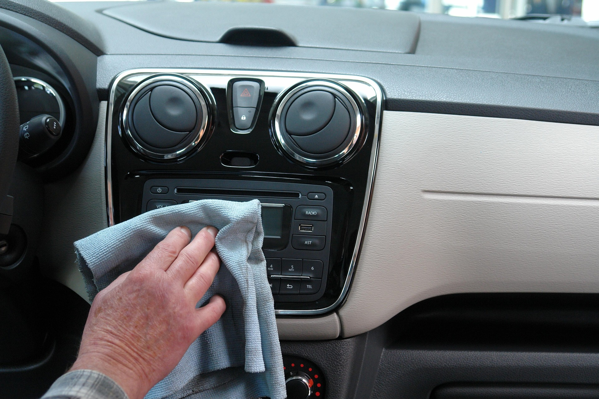
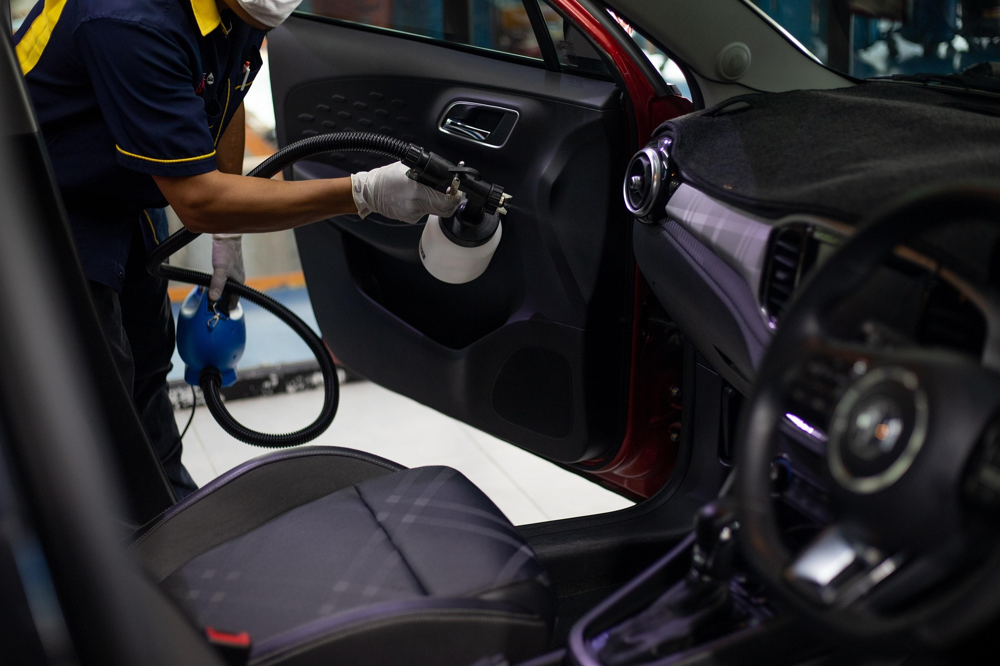
Auton ulkopuhdistus
Ulkopesussa auton pinnalta poistetaan lika ja muut epäpuhtaudet huolellisesti. Pesussa kiinnitetään huomiota auton maalipintaan, vanteisiin ja muihin ulkopintoihin. Säännöllinen pesu pitää auton siistin näköisenä ja auttaa ylläpitämään maalipinnan kuntoa.
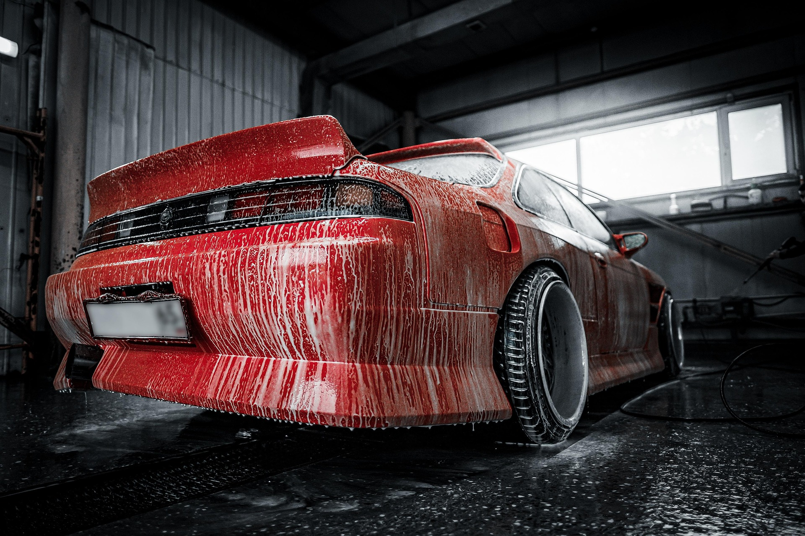
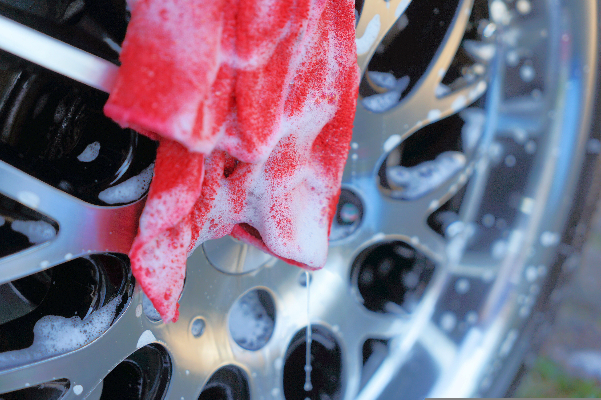
Auton vahaus
Vahaus antaa auton maalipinnalle kiiltoa ja suojaa sitä ulkoisilta rasitteilta. Vahattu pinta hylkii paremmin vettä ja likaa, minkä ansiosta auton puhtaana pitäminen helpottuu. Vahaus viimeistelee auton ulkonäön ja tekee maalipinnasta kiiltävän.
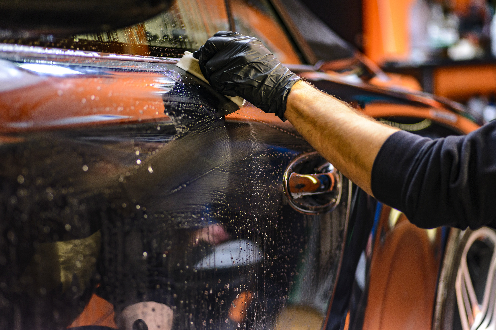
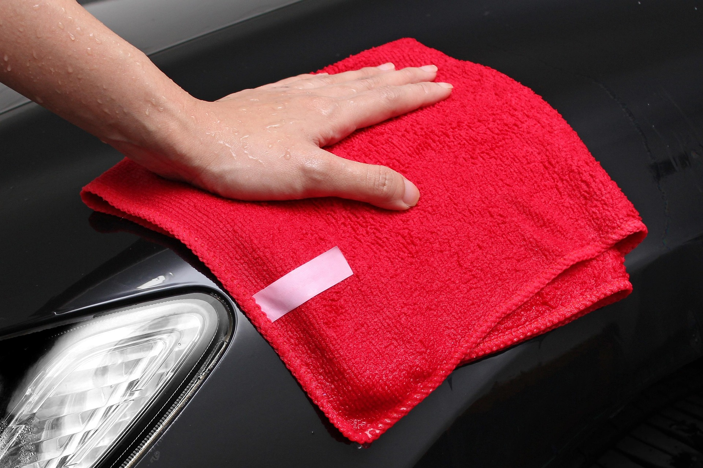
Auton myllytys
Myllytyksellä eli koneellisella kiillotuksella voidaan parantaa auton maalipinnan ulkonäköä ja vähentää pieniä naarmuja sekä muita pintavirheitä. Käsittely palauttaa maalipinnan kiiltoa ja tekee siitä tasaisemman näköisen. Myllytys sopii erityisesti autolle, jonka maalipinta on ajan myötä menettänyt kiiltoaan.
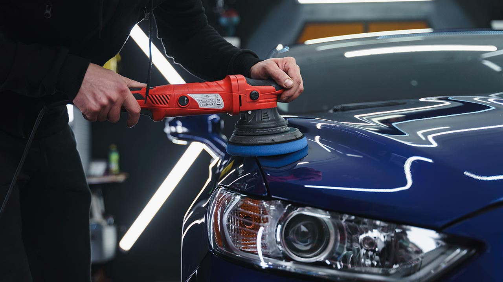
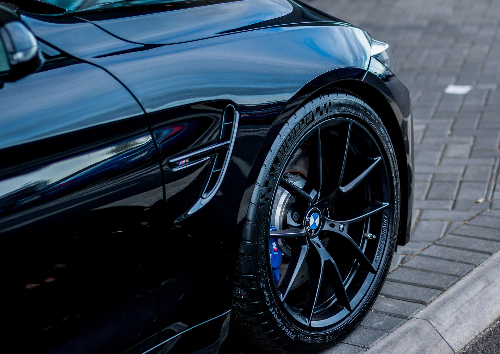
Ikkunoiden tummennukset
Ikkunoiden tummennus viimeistelee auton ulkonäön ja lisää matkustusmukavuutta. Käytämme laadukkaita kalvoja, jotka vähentävät häikäisyä, suojaavat sisätiloja auringon UV-säteilyltä sekä lisäävät yksityisyyttä. Saatavilla useita eri tummuusasteita ajoneuvon ja asiakkaan toiveiden mukaan.
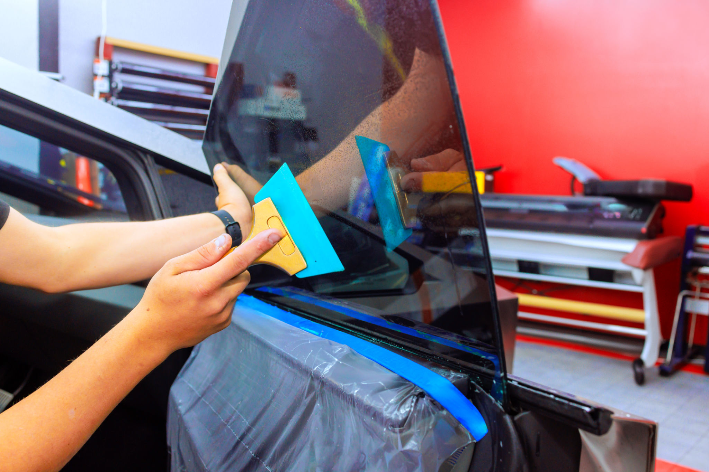
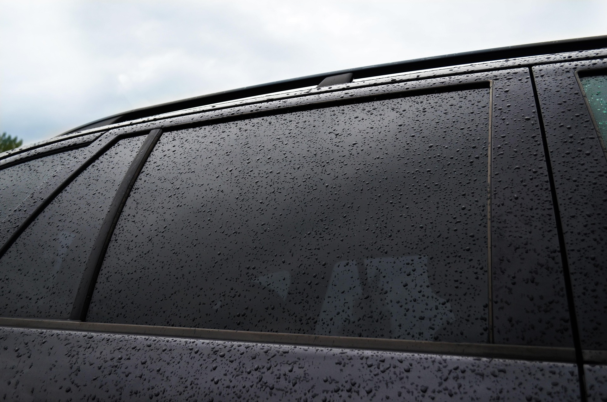
Chrome Delete -teippaukset
Chrome Delete -teippauksella auton kromiset yksityiskohdat voidaan muuttaa tyylikkään mustiksi tai muulla halutulla sävyllä viimeistellyn ulkonäön saavuttamiseksi. Teippaus toteutetaan laadukkailla materiaaleilla, jotka kestävät hyvin käyttöä ja sääolosuhteita. Muutos antaa autolle modernimman ja sporttisemman ilmeen ilman pysyviä muutoksia.
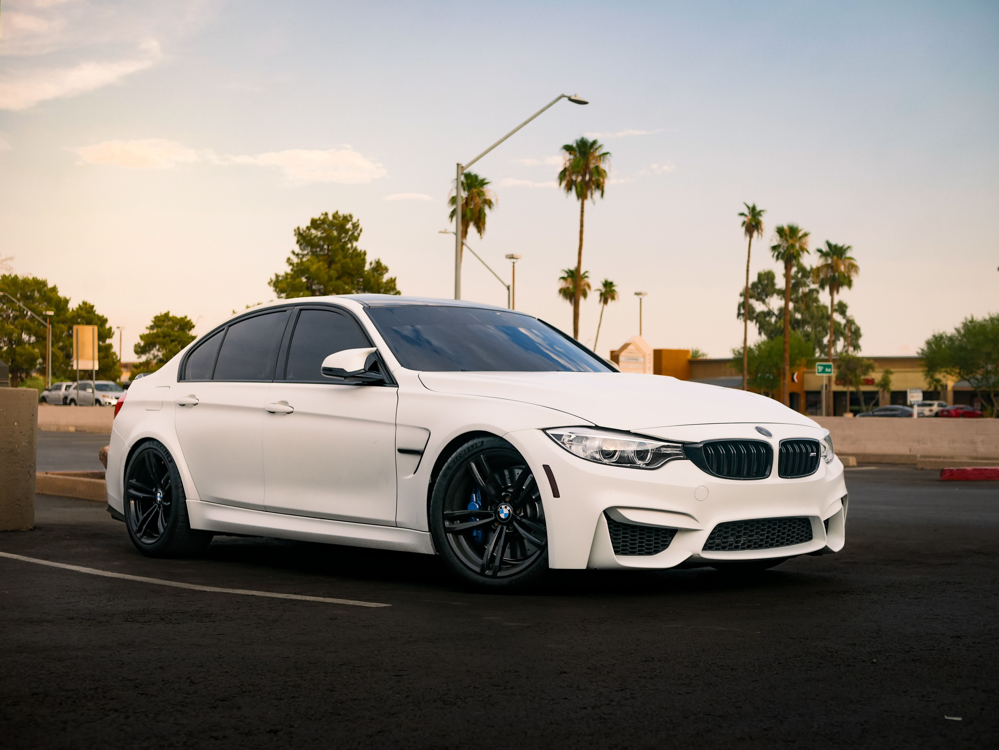